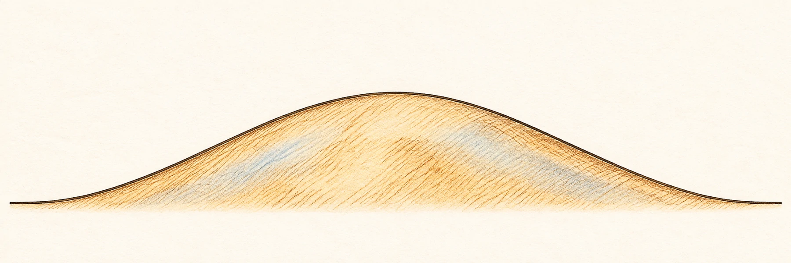
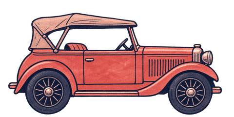

The Hill Puzzle That Delighted Einstein


- Uphill road distance
- 1 mile, average ≤ 15 mph
- Downhill road distance
- 1 mile
- Target average speed
- 30 mph over 2 miles
Schematic route. Both one-mile distances are measured along the road.
The problem
An old car has to travel a two-mile road over a hill. The first mile is uphill, and the second mile is downhill.
Because of the car’s condition, its average speed over the uphill mile cannot exceed 15 miles per hour. It can travel faster downhill.
How fast must it travel on the downhill mile to average 30 miles per hour over the entire two-mile journey?
English restatement of the published problem. The original speed limit on the uphill average is preserved. Published English version
Hint 1
Average speed for the whole journey is total road distance divided by total elapsed time. How much time would the target average allow for the two miles?
Hint 2
The uphill average is at most 15 mph. Use that limit to find the shortest possible climb time for one mile. A slower climb would take longer.
Hint 3
The target allows exactly four minutes for the whole journey. The climb alone takes at least four minutes. The downhill mile still requires a positive amount of time at every finite speed.
Show worked solution
The target cannot be achieved at any finite downhill speed.
A whole-trip average of 30 mph would require a total time of
The uphill average is at most 15 mph, so the uphill time must satisfy
At any finite downhill speed, travelling the remaining mile takes additional positive time. The total trip therefore takes more than four minutes, and its average speed is below 30 mph.
With an uphill average of exactly 15 mph, the overall average approaches 30 mph as downhill speed increases without bound. That is an unattained mathematical limit.
Did Einstein really get this puzzle?
The University of Würzburg catalogues a summer-1934 letter from Max Wertheimer to Albert Einstein containing a car-speed puzzle, along with Einstein’s reply about the brainteasers. Archive catalog, box 22, folder 10
Abraham and Edith Luchins’s study of their correspondence describes Einstein enjoying the puzzles. Study of the correspondence, 1990
The English statement above follows a published translation. The archive catalog establishes the exchange, while its listing supplies a description of the letters. Published English version